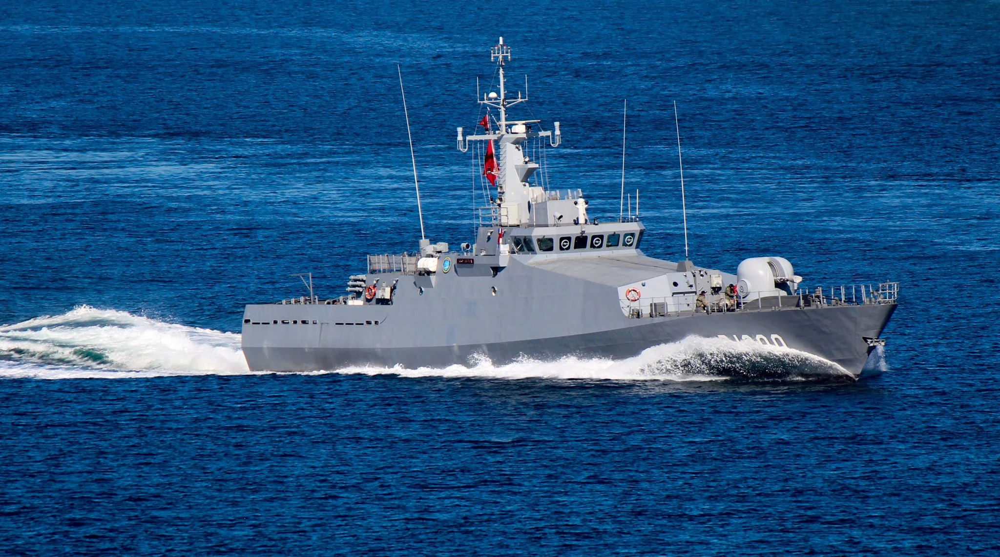
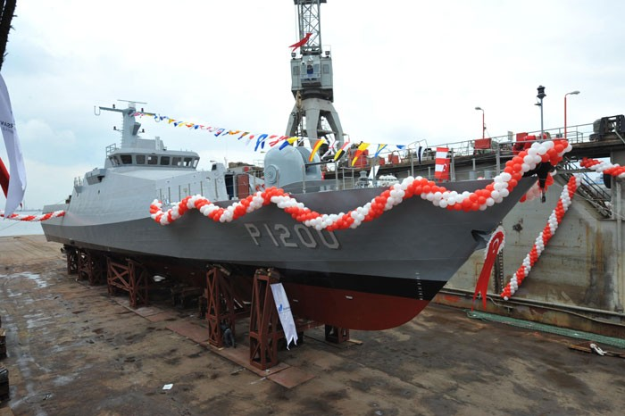
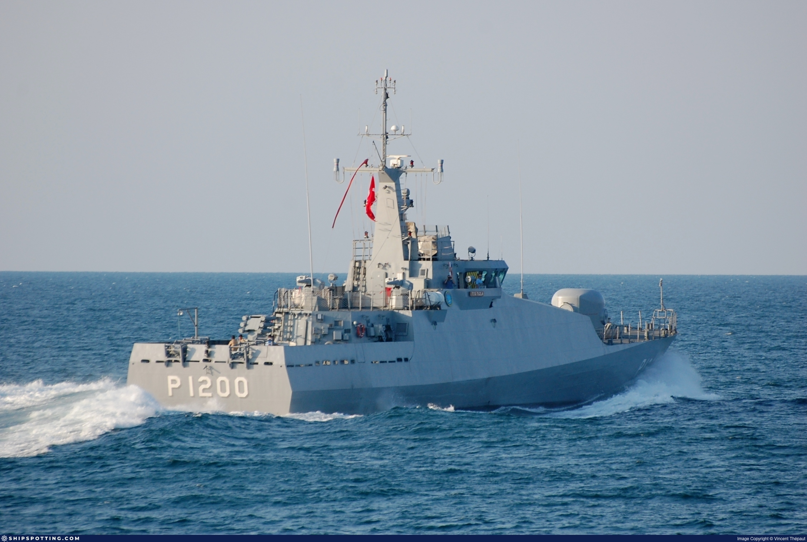

❮
❯
Tuzla sınıfı yeni tip karakol botlarının ilk gemisi.
TCG Tuzla (P-1200), Türk Deniz Kuvvetleri için geliştirilen Tuzla sınıfı yeni tip karakol botlarının ilk gemisidir. Sınıf, kıyı sularında, liman çevresinde ve yakın deniz alanlarında karakol, güvenlik ve denizaltı savunma harbi görevlerini yerine getirmek amacıyla tasarlanmıştır.
Tuzla sınıfı platformlar; nispeten küçük deplasmanlı fakat görev odaklı sensör ve silah donanımına sahip, bakım-idame açısından ekonomik ve kıyı görevleri için uygun savaş gemileridir. Dearsan tarafından inşa edilen bu sınıf, Türk Deniz Kuvvetleri’nin sahil ve liman yaklaşma alanlarındaki harekât ihtiyacına cevap vermektedir.
TCG Tuzla, sınıfın ilk temsilcisi olarak daha sonra hizmete giren diğer P-1200 serisi gemilere öncülük etmiştir. Suüstü güvenlik görevlerinin yanında düşük frekanslı sonar, ASW roket sistemi ve derinlik bombaları ile sınırlı ama önemli bir sualtı savunma yeteneği de taşımaktadır.



| Gemi Sınıfı | Tuzla Sınıfı Karakol Botu |
| Gemi Adı | TCG Tuzla |
| Borda Numarası | P-1200 |
| Program Adı | Yeni Tip Karakol Botu (NTPB) |
| Sınıftaki Yeri | Tuzla sınıfının ilk gemisi |
| Görev Profili | Karakol, liman ve kıyı güvenliği, deniz gözetleme, suüstü güvenlik, denizaltı savunma harbi |
| Üretici | Dearsan Gemi İnşa Sanayi A.Ş. |
| Klas Kuruluşu | Turkish Lloyd |
| Tam Boy | 56,90 m |
| Genişlik | 8,90 m |
| Draft | 2,60 m |
| Deplasman | 410 t / 430 t |
| Gövde Malzemesi | Çelik |
| Üstyapı | Çelik |
| Tasarım Yaklaşımı | Kıyısal sularda yüksek manevra ve düşük işletme maliyeti odaklı tasarım |
| Tahrik Sistemi | Dizel ana makine düzeni |
| Ana Makineler | 2 × dizel motor |
| Jeneratörler | 2 × MTU dizel jeneratör |
| Şaft / Pervane | Şaft tahrikli pervane sistemi |
| Azami Hız | 25+ knot |
| Menzil | 1000 / 2000 deniz mili |
| Ekonomik Seyir Verisi | Yaklaşık 1000 deniz mili @ 14 knot açık kaynak sınıf verisi |
| Mürettebat | 32 personel |
| Açık Kaynak Mürettebat Verisi | 32–35 personel aralığı |
| Ana Top | 40 mm OTO Melara Twin Compact |
| Uzaktan Komutalı Silahlar | 2 × 12.7 mm ASELSAN STAMP |
| ASW Roket Sistemi | Roketsan ASW roket lançeri |
| Derinlik Bombası | 2 × 4 derinlik bombası / açık kaynak sınıf düzeni |
| Navigasyon Radarı | 25 kW X-Band navigation radar with ARPA / W(ECDIS) capability |
| Elektro-Optik Sistem | Çok maksatlı hafif EO/termal görüntüleme sensörü |
| Gyro / INS | Optical gyro compass with INS capability |
| Sonar | Simrad SP92 Mk II gövdeye monteli düşük frekanslı sonar |
| Görev Uzmanlığı | Liman ve kıyı çevresinde güvenlik devriyesi ile yakın kıyı ASW görevi |
| Operasyon Ortamı | Kıyısal sular, liman çevresi, sahil yaklaşma alanları |
| Öne Çıkan Özellik | Küçük boyutta sonar ve ASW roket sistemi taşıyan, kıyısal görevler için optimize edilmiş karakol botu |